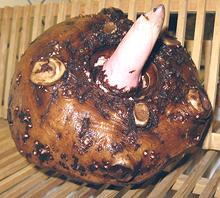

SAFARI
Users
General & History
The Arums are a fairly large family and common as ornamentals, but only a few members are significant as food. Taro has been spread by Polynesian settlers throughout the Pacific Islands and as far as Hawaii. It has long been an important food for these peoples because it is one of the few starchy vegetables that thrive in a hot and very wet environment.
Caution: Arums foliage and some roots typically contain large amounts of sharp pointed Calcium Oxalate crystals that cause severe irritation and swelling of the mouth and throat which can be fatal through strangulation. Should you manage to swallow them, they break down into Calcium and corrosive Oxalic Acid in the digestive tract causing severe gastric distress. It is important that all Arums be properly prepared and cooked before ingestion.
Varieties
Duckweed
[Water Lentil; Family Araceae, Subfamily Lemnoideae, four Genera]
These tiny, free floating, aquatic weeds are native to temperate, subtropical, and tropical regions worldwide. They have evolved into very simple plants, discarding many features of the larger arums. They consists of a single oval green thallus (not a true leaf), that reproduces both by budding and sexually by flowers.
While the Titan Arum has the largest bloom in the plant world, Duckweeds
have the smallest, only three to four hundredths of an inch (0.76 to 1.0 mm)
long. Duckweeds are important for research, pharmaceutical production,
animal food, and in some regions human food. This group of plants now has
it's own Duckweeds page.
Photo by Rapomon (cropped) contributed to the Public
Domain.
Elephant Foot Yam
[Suran (India); Amorphophallus paeoniifolius]
Native to Southeast Asia, this arum produces another warm, super-stinky
flower pretending to be a rotting dead animal. Mercifully the flower is
much smaller than that of the Titan Arum. The corms of this plant, which
look remarkably like old anti-tank mines, are cooked and eaten in
Southeast Asia and in India, where efforts are being made to develop it
into a major crop. Despite the name, it is not a yam. As canned "Suran"
it is sometimes seen in Indian markets in North America.
Photo: copyright holder uncontactable.
Konjac
 [Devil's Tongue; Konnyaku (Japan); Gonyak (Korea); Amorphophallus konjac]
The Konjac plant is native to tropical and warm temperate zones of East Asia, as far north as Japan, and as far south as Indonesia. It has been planted in Hawaii. It is harvested for root corms that can be up to 10 inches in diameter. Corms are ground up and extracted to produce a flour that is almost entirely soluble fiber. This fiber has many food industry uses as a gelling agent, thickener, film former, emulsifier, and stabilizer.
The flour is also made into a clear jelly formed into blocks and
noodles, much used in Japan and Korea. This jelly is often colored with
powdered Hijiki seaweed. The flour is also used by vegans as a substitute
for gelatin, and by diabetics as a thickener having almost no calories
or carbs. It is being promoted as a weight loss item, but there are
some dangers.
Details and Cooking.
Photo by Silke Baron distributed under license
Creative Commons
Attribution v2.0 Generic.
Jack-in-the-Pulpit
[Indian turnip; A. triphyllum]
Rhizomes of this common wetland plant found in the northeast U.S.
were eaten by Native Americans in times past but it is no longer a
significant food plant.
Photo © i0084.
Malanga
[Yautia (Puerto Rico), Malanga (Cuba), Many More Names; xanthosoma sagittifolium (malanga blanca)]
Native to northern South America, this arum is now also grown all through the Caribbean region and Central America, and is particularly popular in Cuba and Puerto Rico. The plant is also now grown in West Africa as an alternative to yams and taro (cocoyam) and in Hawaii as 'ape (say "Ah-pay").
The corm is somewhat mucilaginous and cooks to a smoother texture than
potato, with chunks holding their shape well. The longer of the photo
specimens, obtained from a multi-ethnic market in Los Angeles, was 8-1/2
inches long, 2-5/8 inches in diameter at the thickest part, and weighed
14 ounces.
Details and Cooking.
Skunk Cabbage
[Symplocarpus foetidus]
Rhizomes of this common wetlands plant, found in North America from southern
Canada to Georgia, were eaten by Native Americans in
times past but it is no longer a significant food plant here. It
inhabits damp stream beds and gets its name from the skunk-like
odor the leaves exude when damaged. This plant was very common in the back
woods of New Jersey where I lived for a while as a child.
Photo © i0083.
Taro Corms
[Taro (Polynesian); Kalo (Hawaiian); Colocasia (Rome); Kolocasi (Cyprus); Ocumo, Cocoyam, Madumbi, Nduma (Africa); Macabo (Cameroon); Khoai mo, khoai so (Vietnam); Laing (Philippine); Dasheen, Eddoes (Caribbean); Malanga cabeza, Malanga islena (Cuba); Arvi, Colocasia (India); Talas (S.E. Asia); Dalo (Fiji); Cara (Brazil); Calaloo (Caribbean, leaves only); Yautia (Puerto Rico); Colocasia esculenta]
Probably native to the wetlands of Malaysia, taro was carried through the
Pacific region as far as Hawaii by seagoing canoe, and by traders as far
as ancient Egypt and Rome. In more modern times it has been carried to all
tropical and near tropical areas, including Africa, Central America and
the Caribbean. Cold tolerant varieties are grown in China, Korea and
Japan. The photo specimens run up to about 5 inches inch long, 2-1/2 inches
diameter and about 5 ounces.
Details and Cooking.
Taro Leaves & Stems
 [Taro (Polynesian); Kalo (Hawaiian); Colocasia (Rome); Kolocasi (Cyprus);
Ocumo, Cocoyam, Madumbi, Nduma (Africa); Macabo (Cameroon); Khoai mo,
khoai so (Vietnam); Laing (Philippine); Dasheen, Eddoes (Caribbean);
Malanga cabeza, Malanga islena (Cuba); Arvi, Colocasia (India); Talas
(S.E. Asia); Dalo (Fiji); Cara (Brazil); Calaloo (Caribbean, leaves
only); Yautia (Puerto Rico); Colocasia esculenta]
[Taro (Polynesian); Kalo (Hawaiian); Colocasia (Rome); Kolocasi (Cyprus);
Ocumo, Cocoyam, Madumbi, Nduma (Africa); Macabo (Cameroon); Khoai mo,
khoai so (Vietnam); Laing (Philippine); Dasheen, Eddoes (Caribbean);
Malanga cabeza, Malanga islena (Cuba); Arvi, Colocasia (India); Talas
(S.E. Asia); Dalo (Fiji); Cara (Brazil); Calaloo (Caribbean, leaves
only); Yautia (Puerto Rico); Colocasia esculenta]
Taro leaves are, of course, grown wherever Taro Corms are grown (see our Taro / Colocosia page). They are edible, and are cooked and eaten in most of those regions. They do need much different treatment, because the Oxalic Acid and Calcium Oxalate content can't be simply peeled off as it can with the corms.
While these have been pretty much unavailable in North America, they
are now showing up in Philippine markets here in Los Angeles, and are
selling very well when they appear.
Details and Cooking.
"Big Taro"
[Big Taro (Philippine market); Badjang (Philippines); Unknown]
Not actually a Taro, but closely related, this plant is native to the
rainforsts of Island Southeast Asia, and as far south as Queensland,
Australia. It has long been cultivated in the Philippines and spread through
the Pacific Islands from there.
Details and Cooking.
"Giant Taro"
[Giant Taro, Giant Alocasia (English); Badjang (Philippines); 'Ape (Hawaii, Oceania); Vi'a or Bi'a (Taiwan Austronesian); Biga, Bira (Philippines); Birah (Malay); Cunjevoi (Australia); Alocasia macrorrhizos]
Not actually a Taro, but closely related, this plant is native to the
rainforests of Island Southeast Asia, and as far south as Queensland,
Australia. It has long been cultivated in the Philippines and spread through
the Pacific Islands from there.
Details and Cooking.
Giant Trunk Taro
[Unidentified]
Some searches for "Cooking Giant Taro" come up with videos featuring this
Taro. In all these videos, everyone is dressed in Indian clothes, so I
presume this is a Variety found in India. The photo here is from Wikimedia,
and was labeled Alocasia macrorrhizos, but it certainly does not look
anything at all like any other photos of that species. The stem is the part
eaten, and may be up to about 5 inches diameter. First the brown bark is cut
away, then the white core is sliced up into short, fairly thin pieces. It
is cooked by boiling, and holds its shape well.
Photo by Fanghong distributed under license Creative Commons
Attribution-ShareAlike v3.0 Unported.
Giant Swamp Taro
[Puraka (Cook Islands); Lak (Yap - Micronesia); Babai (Kiribati); Iaraj (Marshall Islands); Brak (Palau); Baba' (Marianas Islands); Pula'a (Samoa); Via kan (Fiji); Pulaka (Tokelau, Tuvalu); Mwahng (Pohnpei); Pasruk (Kosrae); Simiden (Chuuk); Swam taro (Papua New Guinea), Navia (Vanuatu); Palawan (Philippines); Mane (Nepal); Cyrtosperma merkusii]
This Taro can grow even larger than the Giant Elephant Ear, with leaves that exceed 6 feet long and 4 feet wide, and corms that can weigh up to 220 pounds (100 kg). It is endemic to the islands of Oceania, particularly those in the mid Pacific where it is a critical contributor to nutrition for the people who live there. It is difficult to grow, and becoming more difficult as Global Warming is raising the sea level. Salt water increasingly is invading the growing ponds and reducing the fresh water lens these plants depend on. The corms need to be boiled for hours to detoxify them.
This Taro also grows along stream banks in the tropical parts of Nepal,
where it is harvested in January and February. Leaves, Stems, and Corms
are all eaten, and all need lengthy boiling and changes of the water to
remove irritating and toxic elements.
Giant Elephant Ear
 [Indian Taro; Bac ha (Viet); Colocasia gigantea]
[Indian Taro; Bac ha (Viet); Colocasia gigantea]
Often sold as "Taro Stems", this plant is native to Southeast Asia, and
is thought to be a natural cross between Alocasia macrorrhizos
and Colocasia esculenta (Taro). The stems are eaten as a vegetable
in Southeast Asia, particularly Vietnam, and in Japan. The root corms
of this species are fibrous and inedible, and the leaves are not
particularly edible either.
Details and Cooking.
Baibing
[Baibing (Mizo); Alocasia fornicata - also - Colocasia affinis] The Spadix (flower spike) of these plants are harvested in the wild as a seasonal vegetable in the far northwest corner of Burma and the adjacent states of far eastern India. The Spadix, like the rest of the plant, contains sharp calcium oxalate crystals, so must be sufficiently cooked to be edible. The Photo is not of Alocasia fornicata as no suitable image was available. It is of Alocasia macrorrhizos, but should look pretty similar. Photo by Fanghong distributed under license Creative Commons Attribution v3.0 Unported.